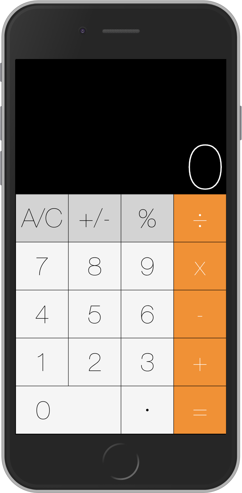

I developed a program that measures volume in a container only using a user's webcam. Written in Python, using the OpenCV library, and tkinter for the UI.
Team EmoBots software using IBM Watson API to create an emotional companion that detects your tone and mood and can respond with unique speech and movements. at the AT&T SHAPE Hackathon in Los Angeles.
I worked on the entire NodeJs express app and was responsible for using IBM Watson's Tone analyzer api, sending data back and forth to our robot.

With a team of three, we developed the website for our club. We started from scracth with HTML, CSS, and javascript. We then used the boostrap framework to make it responsive for varying device sizez.

A simple web calculator for mobile phones, written with HTML, CSS, JQuery.
